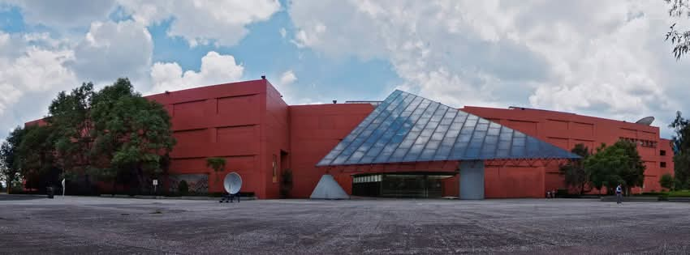

Antecedentes
Universum, Museo de las Ciencias, es un espacio interactivo inaugurado en 1992 y forma parte de la Universidad Nacional Autónoma de México (UNAM). Se encuentra ubicado dentro de la Ciudad Universitaria y tiene como propósito acercar el conocimiento científico y tecnológico al público en general.
Este museo es pionero en su tipo en México y América Latina. A través de exposiciones permanentes e itinerantes, fomenta el interés por la ciencia y la tecnología, promoviendo el pensamiento crítico y la curiosidad por el mundo que nos rodea.
El diseño del museo está orientado a crear experiencias interactivas que permitan a los visitantes aprender de manera práctica, con énfasis en temas como la biología, la física, la química, las matemáticas y el cuidado del medio ambiente.
Exposiciones
Dinosaurios entre nosotros
Exposición temporal
Ubicación: Planta baja, edificio A
Fechas: 08 de diciembre de 2023 al 05 de enero de 2025
Los dinosaurios nunca desaparecieron realmente de la Tierra. La mayoría se extinguió, pero su legado evolutivo sigue vivo en la actualidad a través de las aves. La exposición Dinosaurios entre nosotros mostrará la conexión ininterrumpida entre los dinosaurios que dominaron el planeta durante unos 170 millones de años y las aves modernas.
Esta exposición está organizada por el American Museum of Natural History en Nueva York con el apoyo del North Museum of Nature and Science, Estados Unidos; el Philip J. Currie Museum, Canadá; el Museo de Ciencias, Universidad de Navarra, España y Universum Museo de las Ciencias de la UNAM, México. Esta edición de Dinosaurios entre nosotros estuvo a cargo del Dr. Akinobu Watanabe, investigador asociado del American Museum of Natural History, y es una adaptación de una exposición original del Museo que tuvo el mismo nombre y que estuvo a cargo de Mark Norell, curador emérito del Departamento de Paleontología.
Secciones de la exposición:
- Nidos, huevos y crías
- Huesos, picos y garras
- Plumas y vuelo
- La nueva era de los dinosaurios
¡Te esperamos!
Tic tac de la vida
Exposición temporal
Ubicación: Primer piso, edificio B
Fechas: 16 de marzo de 2024 al 02 de febrero de 2025
La vida en la Tierra está adaptada a la rotación del planeta. La mayoría de los seres vivos responden a un reloj biológico interno que ayuda a sincronizar los ritmos biológicos en ciclos de 24 horas. A estos ciclos se les conoce como ritmos circadianos.
Los organismos se han adaptado para organizarse con esta periodicidad, pero no todas las células y órganos del cuerpo están activos a la vez. Cada uno tiene su tiempo de actividad óptimo, y este tiempo se ajusta o desajusta en función del ciclo luz-oscuridad. Hay funciones corporales que se llevan a cabo de día, mientras estamos despiertos, y otras que ocurren de noche, cuando estamos dormidos. Cuando no dormimos adecuadamente por la razón que sea (por las obligaciones y los compromisos sociales, o porque viajamos), desajustamos nuestro ciclo sueño-vigilia y algunos órganos del cuerpo se desincronizan, lo que se refleja en mal humor, dificultad para concentrarse y mayor propensidad a los accidentes.
De lo que no nos damos cuenta, es que todo nuestro organismo está afectado, y hay efectos adversos para la salud cuando no estamos sincronizados. ¡Pon a tiempo tu reloj biológico! ¡Visita la exposición!
Horarios de Servicio
De miércoles a domingo, de 10:00 a 17:00 horas.
Precios
General: Salas permanentes, temporales y espacios interactivos: $90.00
General con descuento:
- Menores de 2 a 12 años: $80.00
- Estudiantes, profesores, INAPAM, personas con discapacidad, exalumnos y trabajadores de la UNAM: $80.00 (presentando credencial vigente*)
* Es indispensable presentar la credencial vigente en la taquilla del museo para aplicar el descuento de adulto mayor, profesor o estudiante.
Combos
SUPER COMBO:
General + Imaginare + Océano + Tesoros
Disfruta de TODO lo que te ofrece Universum por un solo precio. No incluye acceso al teatro. Se vende hasta las 15:00 horas.
Costo: $195.00
COMBO DESCUBRE:
General + Océano + Tesoros
Conoce todas las salas del museo. Se vende hasta las 15:00 horas.
Costo: $125.00
COMBO EXPLORA:
General + Imaginare (Sujeto a disponibilidad)
Conoce las salas y espacios interactivos del museo.
Costo: $150.00
COMBO DISFRUTA:
General + Teatro (Consulte cartelera)
Conoce las salas, espacios interactivos y el teatro.
Costo: $150.00
Los boletos son válidos sólo en la fecha emitida, no hay cambios ni devoluciones. Los combos son individuales.
Exposiciones especiales
Tesoros: fósiles y minerales de México
Solo con boleto general. Exposición que te transporta a un viaje a la Era Mesozoica, a través de fósiles y minerales.
Costo: $30.00
Océano, inmensidad desconocida
Solo con boleto general. Conoce el mundo marino y todo lo que lo rodea.
Costo: $15.00
Imaginare:
Se recomienda a partir de 7 años. No incluye acceso al museo. Es el espacio interactivo que te lleva a explorar mundos espectaculares con realidad virtual. Sujeto a disponibilidad.
Costo: $100.00
Teatro científico:
Puesta en escena que combina elementos científicos y artísticos.
Costo: $100.00
Estacionamiento
El museo cuenta con estacionamiento para automóviles y autobuses de transporte escolar, con bahía de ascenso y descenso para estudiantes y maestros.
- Autobús: $60.00*
- Automóvil: $15.00*
* Tarifa única.
Ubicación
Dirección: Circuito Cultural de Ciudad Universitaria Coyoacán, 04510 Ciudad de México.
Detalles de Universum, Museo de las Ciencias
Conoce más sobre Universum en su página oficial: Ir al sitio web de Universum.